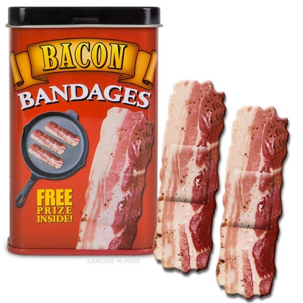

jag har en känsla av att vi inte kommer bli så bra vänner. om jag har sagt att du inte ska klicka så klickar du inte, okok??
du förväntade dig säkert störta suprise;en men nu är du bara besviken för att jag är så dryg och skriver så mycket. men asså,,,, varför läser du ens? vad är ditt problem liksom du kan inte kalla mig dryg för att jag skriver så mycket men ändå sitta och läsa det jag skriver,,,, fattar inte dig

checka baconplåster,,,,, det klart att du ska köpa sånt va?